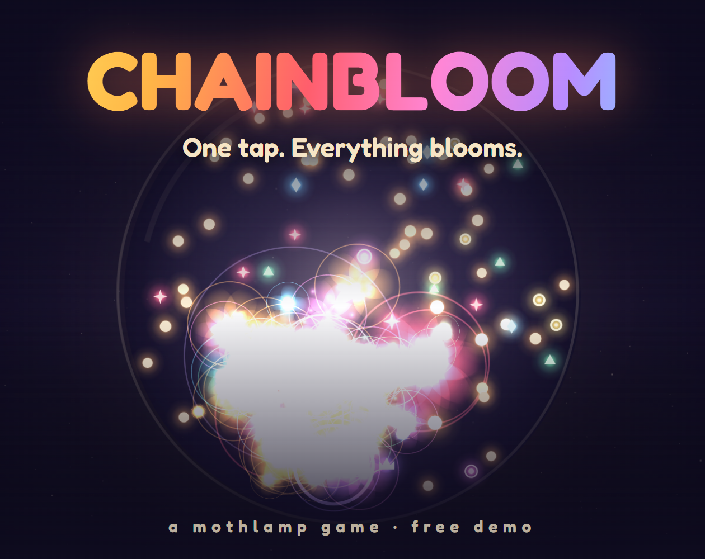
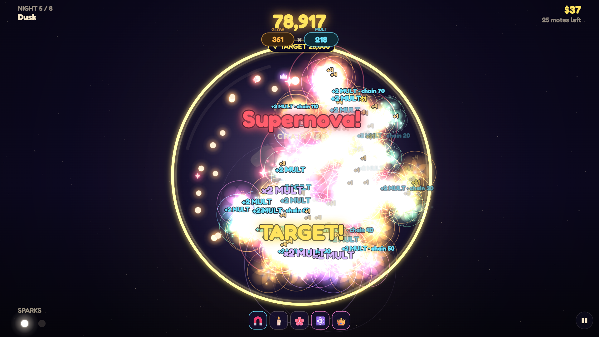
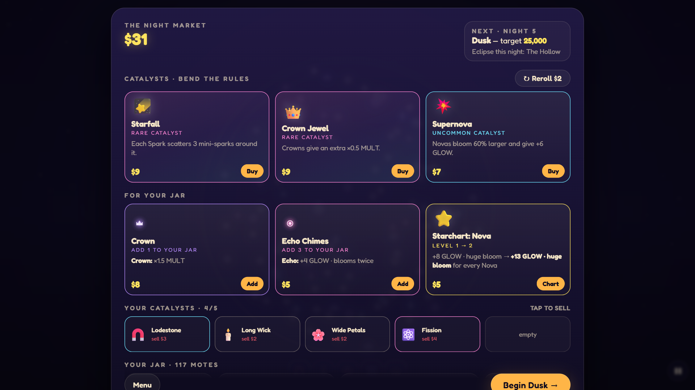
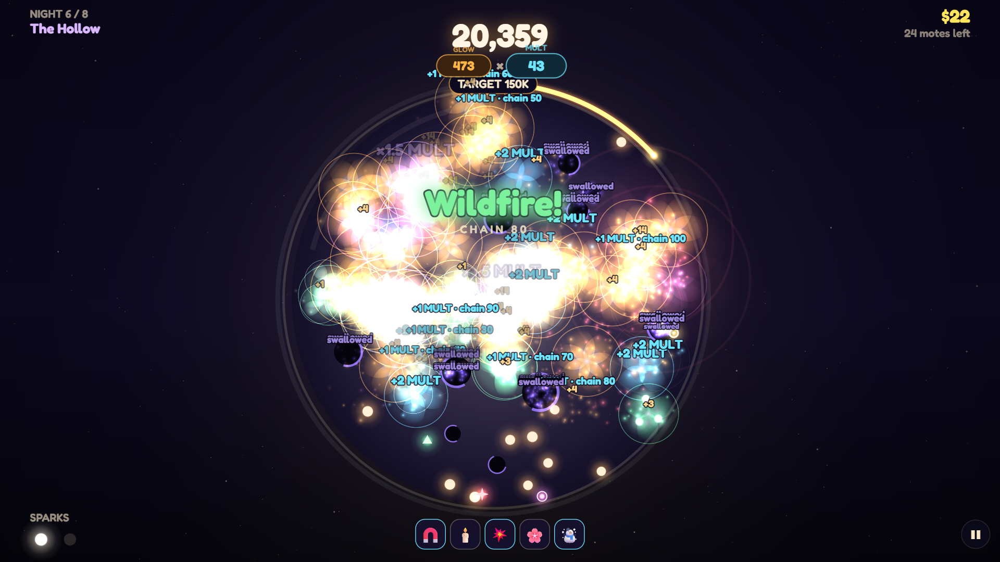
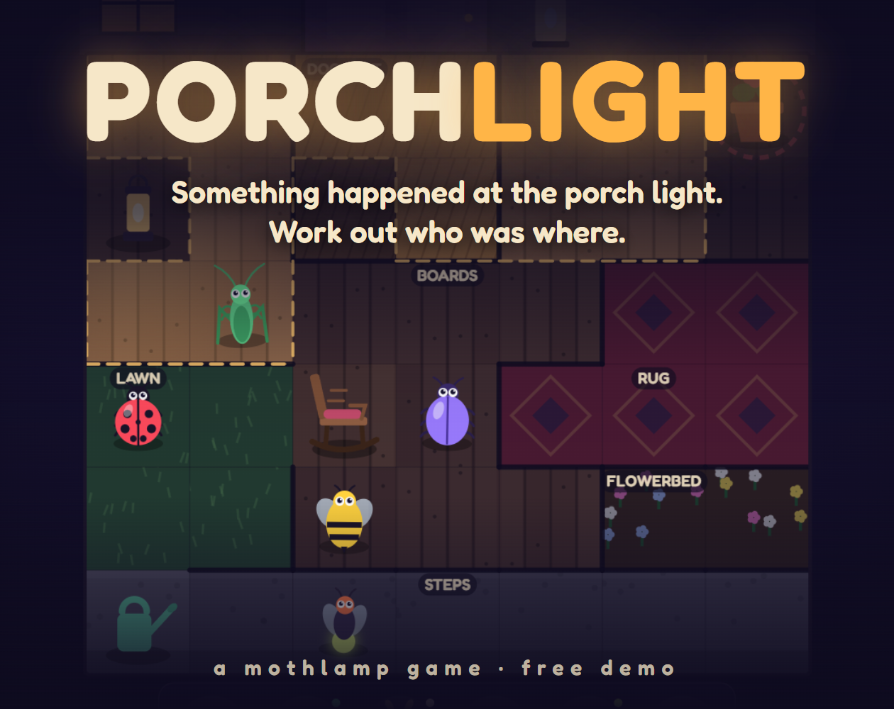
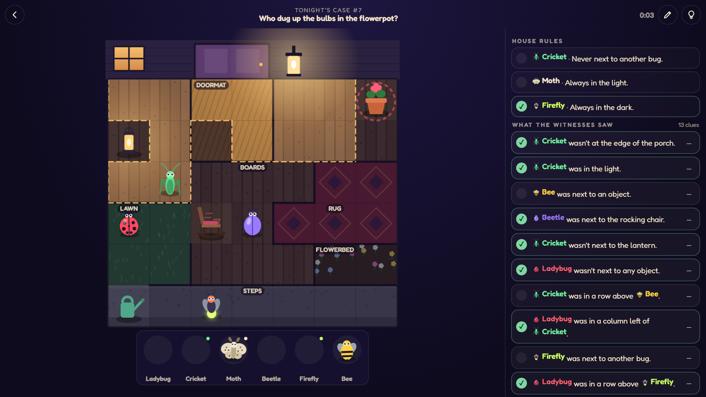
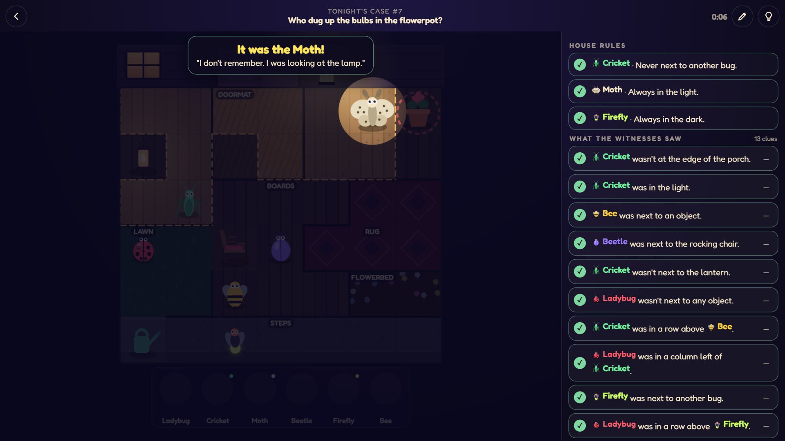
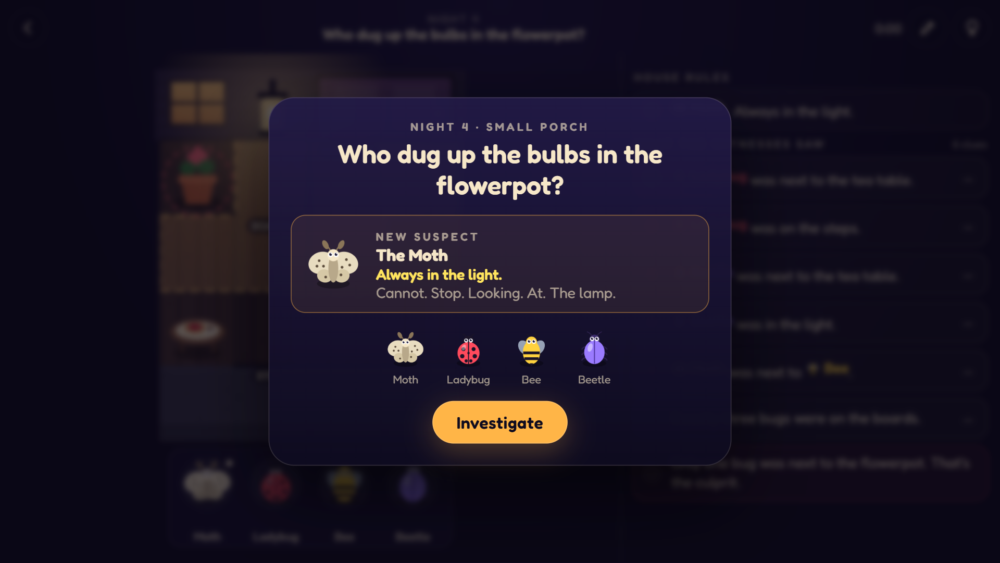

Descriptions written once for itch.io now and Steam later, plus the cover and screenshots for each game. Copy buttons give plain text for itch.io, or BBCode for Steam's long description. Click an image to open it full size, or right-click it to save or copy.
Chainbloom/dist/itch/chainbloom-demo.zip




Porchlight/dist/itch/porchlight-demo.zip



